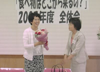

| ■全体会 |
| |
１． |
埼玉県生協連の伊藤恭一専務理事より、2007年度の体制について報告がありました。
前島会長の退任と新会長に県生協連常務理事の新井里美さんが理事会で推薦されたことが報告され、前島さんのこれまでの活躍に感謝を述べました。 |
| |
２． |
|  |
| 新井新会長(写真右)より、前島前会長に花束が贈られました |
埼玉県生協ネットワーク協議会の新会長に新井里美さんが拍手で確認されました。
＜前島さんあいさつ＞
2002年に女性協からネットワーク協議会に変わり、他団体からも認められ、協議会が大きく成長してきたことなど、エピソードを交えながら話されました。
＜新井新会長あいさつ＞
女性協の頃からの先輩方の積み重ねと思いがあってネットワーク協議会の今があると思います。６つの生協が力を合わせて活動していきましょう。 |
| |
３． |
2006年度活動のまとめ
生協ネットワーク協議会設置要綱を確認しながら、「生協ネットワーク協議会が目指すもの」を確認し、一年間を振り返り、様々な分野で充実した活動が行われたとの報告がありました。 |
| |
４． |
2006年度決算報告、2007年度予算を提案し、確認されました。 |
| |
５． |
2007年度活動計画では、昨年度に引き続き「広く地域の中でつながりあうために」という総合テーマで学習・交流活動を強めること、サブテーマは今後活動を通して話し合っていくことが確認されました。また、年間スケジュールを提案し確認されました。 |
| |
６． |
今回で卒業されるメンバーの紹介が新井新会長からあり、各生協の代表の方に一言ずつあいさつをいただきました。 |